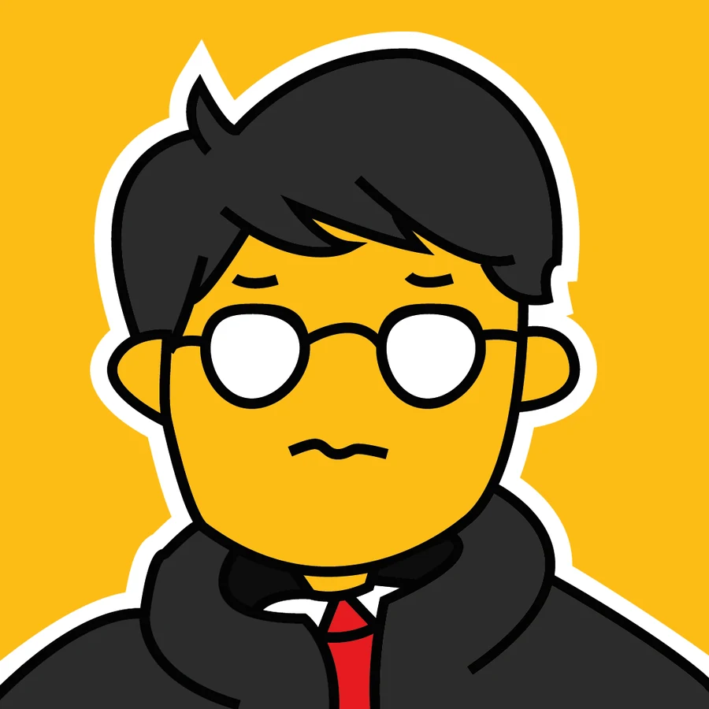

Projects
Each carousel is one continuous piece. Drag it, swipe it or use the slider to follow it.
Painting studies
Digital landscapes painted in Procreate during a painting course. Studies in light, color and atmosphere.
01 / 16
Beyond games
Over ten years of design, illustration and photography shape how I build worlds. A few pieces from my wider portfolio.

Who's behind it
I'm Douglas de Souza Castro, a designer and art director from Pinhais, Brazil, moving into the game industry. I have a degree in Digital Games from PUCPR and I'm doing a postgraduate program in Art Direction and Creative Processes.
By day I lead creative direction for national and multinational brands. GeDodo is where I bring that experience to games: creatures, boss fights, systems and the documents behind them.
The identity
1d1d1be42320ffb01ae0e0e0